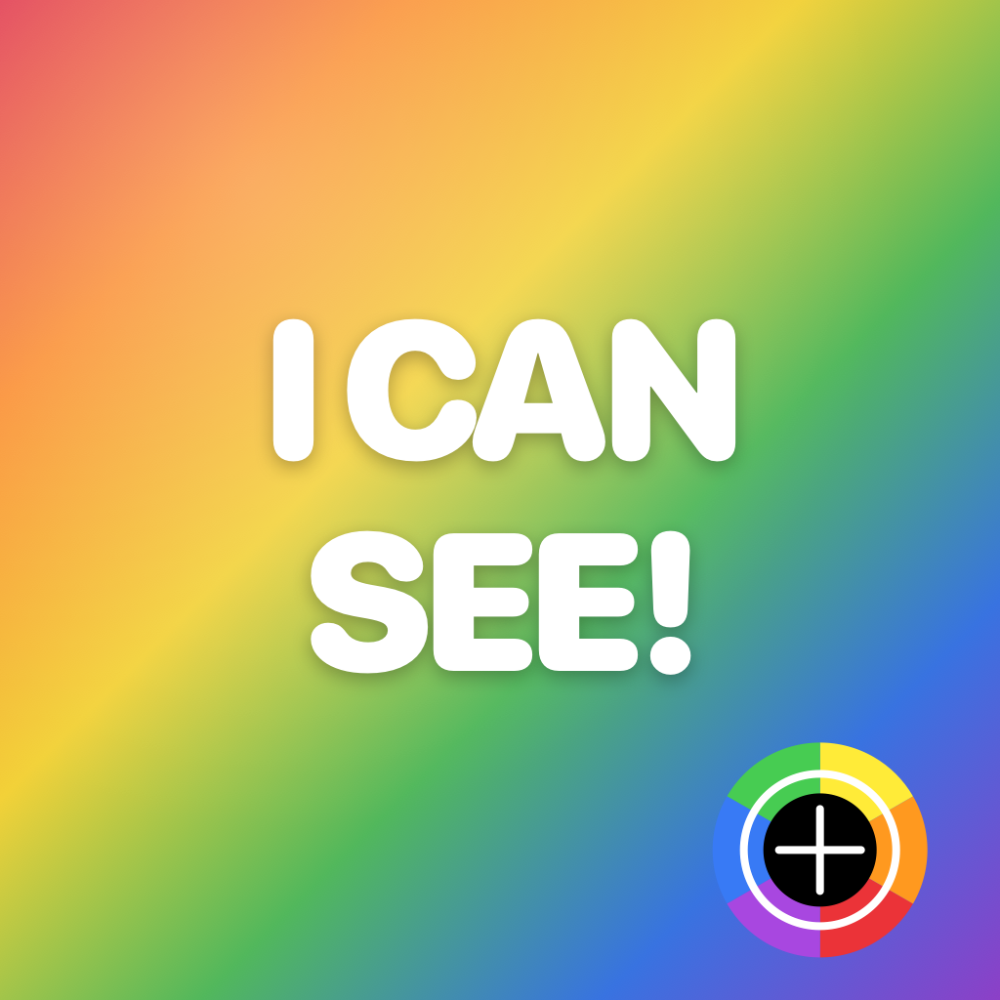

Answers to common questions, plus how to get in touch.
Open the app and point the camera at the color you're curious about. The crosshair in the middle of the screen marks the pixels being sampled, and the name appears in big text at the bottom — Red, Teal, Lavender, and so on.
Tap anywhere on the camera preview. The reading freezes so you can read it without holding the phone steady. Tap again to unfreeze.
Tap the photo button (top-right, the photo icon) and choose Choose from Photos or Choose from Files. Drag the loupe around the image to identify the color at any specific pixel.
Most surfaces aren't a single uniform color — lighting, shadows, and screen glare shift what the camera actually sees. For the most accurate reading, use diffuse natural light and aim straight at the surface.
The app samples a small region around the crosshair (about 24×24 pixels), averages the colors, and finds the nearest match in a 31-name palette using CIE Lab distance. Lab is roughly perceptually uniform — meaning it weights hue, lightness, and chroma the way human eyes do — so dark navy reads as Navy instead of being lumped into Black.
The palette is deliberately small. It only includes color names a typical English speaker would say out loud (no papayawhip or gainsboro). For people with color vision deficiency, a precise but unfamiliar name is worse than no name — you can't act on a label you don't recognise.
No. The app reports what the camera actually sees, in standard color names. The point is to give you ground truth, not to simulate what you'd see if you had typical color vision. If "the apple is red" is what you need to know, that's what the readout will say.
Nowhere. Every frame is processed on your iPhone and discarded as soon as the next one arrives. The app does not record video, save photos automatically, or upload anything to a server.
They're handled by the standard iOS Photos picker and Files importer — system UIs that hand the app a single image at a time. The app never sees the rest of your library, and the loaded image stays in memory only while the inspector is open.
Only four anonymous signals: App.launch, Camera.authorized/Camera.denied, and Reading.frozen/Reading.resumed. Never the color, hex code, photo, or any image data. See the privacy page for details.
I Can See! requires iOS 17.0 or later on iPhone. iPad and Apple Watch are not currently supported. The camera mode needs a working rear camera; photo mode works on any iPhone.
Email the maintainer with your iOS version, iPhone model, and a description of what happened.